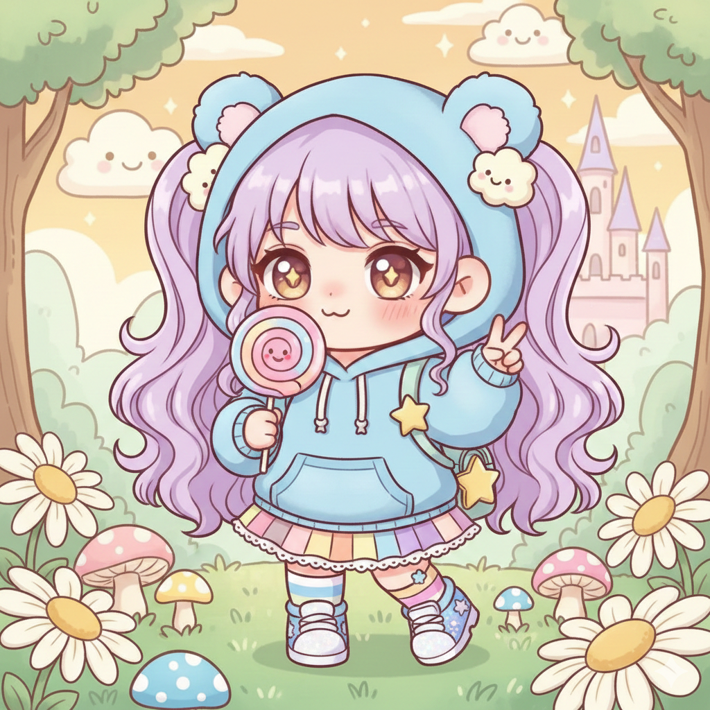

GIỚI THIỆU BẢN THÂN

Phương châm sống
"Life is a blank canvas, paint it beautiful." (Cuộc sống là một bức tranh trống, hãy vẽ nên điều tươi đẹp.)
Sở thích (Hobbies):
Vẽ tranh digital (màu nước/thiết kế nhân vật).
Đọc sách (đặc biệt là thể loại tiểu thuyết giả tưởng và sách triết lý).
Nghe nhạc Lo-fi và nhạc không lời khi làm việc.
Thích lang thang ở các phòng tranh hoặc khu phố cổ để tìm cảm hứng.
Sở trường (Strengths):
Kỹ năng mỹ thuật: Có khả năng phối màu tốt, sử dụng thành thạo các phần mềm thiết kế.
Tính cách: Kiên nhẫn, tỉ mỉ, có khả năng tập trung cao độ khi làm việc sáng tạo.
Tư duy: Khả năng lên ý tưởng và xây dựng kịch bản (storytelling/storyboarding).
Yêu/Thích (Loves/Likes):
Mùi hương của giấy và sách cũ.
Những buổi chiều có mưa nhẹ và không khí mát mẻ.
Đồ ăn ngọt (chocolate, tiramisu).
Những không gian yên tĩnh để có thể tập trung vào suy nghĩ.
Ghét (Hates/Dislikes):
Tiếng ồn lớn và sự hỗn loạn không cần thiết.
Sự vội vàng, làm việc dưới áp lực thời gian quá gấp.
Những người thiếu tinh thần hợp tác hoặc không tôn trọng công sức người khác.
Ước mơ (Dreams):
Trở thành một Họa sĩ Minh họa (Illustrator) chuyên nghiệp, có tác phẩm được xuất bản quốc tế.
Mở một phòng trưng bày nhỏ kết hợp quán cà phê sách của riêng mình.
Dự định tương lai (Future Plans):
Hoàn thành khóa học chuyên sâu về Thiết kế Đồ họa và Animation.
Xuất bản tập truyện tranh ngắn đầu tay tự mình vẽ và viết kịch bản.